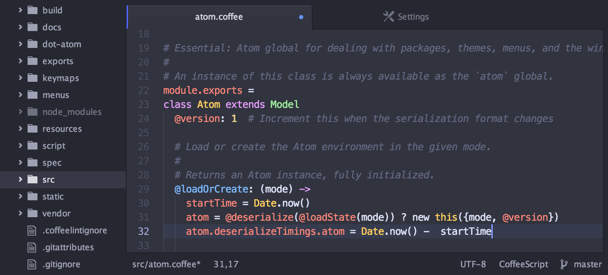

Hack Your Career
 Hack.your.Career
Hack.your.Career


Andżej
&
Web Development
Who is Andżej?
Definicja: osoba, ex-górnik, emeryt, beer-lover

Tools
Czy istnieje prawdziwe IDE do JavaScriptu?
Atom
Visual Code Studio

To które powinienem wybrać?
OK, edytor mamy, co jeszcze?
Narzędzie do kolaboracji
SourceTree

Na koniec terminal
Black Screen

Dżesika & Website WireFrame

HTML
HTML - a co to takiego?
Dokument używany do wyświetlania zawartości na stronach WWW
HTML - dlaczego warto?
- Prosty i użyteczny język przydatny w tworzeniu stron WWW.
- Bardzo łatwy do nauczenia i ogarnięcia.
- Podstawa w tworzeniu bardziej zaawansowanych aplikacji.
Struktura dokumentu HTML
<!doctype html>
<html>
<head>
<meta charset="utf-8">
<title>BeerMajster</title>
<link rel="stylesheet" href="css/styles.css">
</head>
<body>
<!-- Komentarz ignorowany przez przeglądarki -->
<header></header>
<main></main>
<footer></footer>
</body>
</html>
Semantyczny vs. niesemantyczny kod
// Źle!
<div>
<font size="6"><b>Tytuł</b></font>
<span><i>Paragraf</i></span>
</div>
// Dobrze :)
<article>
<h1>Tytuł</h1>
<p>Paragraf</p>
</article>
Best practices
-
Zawsze deklaruj DOCTYPE.
<!doctype html> - Pisz kod semantyczny i zgodny ze specyfikacją W3C.
- Do stylowania wyglądu używaj wyłącznie CSS'a.
- Tabel używaj jedynie do przedstawiania danych tabelarycznych.
- Testuj wygląd strony w różnych przeglądarkach.
Andżej & HTML
Resources
- Learn to Code HTML & CSS (by Shay Howe)
- Learn HTML & CSS: Part I (CodeAcademy)
- Field Guide to Web Applications
- HTML5 Element Index
Dżesika & Design
Cascading Style Sheets
(CSS)
No właśnie,
co to takiego CSS?
- język służący do graficznego formatowania elementów HTML, które tworzą wygląd strony internetowej

CSS
- został stworzony w celu odseparowania struktury dokumentu od formy jego prezentacji
- separacja
- zmniejsza kompleksowość dokumentu,
- ułatwia wprowadzanie zmian w strukturze dokumentu
CSS selektory
/* class */
.tower-of-pisa {
font-style: italic;
}

/* ID */
#ninja {
visibility: hidden;
color: black;
}
CSS selektory
/* element */
body {
height: 100%;
display: flex;
}

/* combining selectors */
#europe .country div {
border: none;
}
/* layering selectors */
.ikea .section .furniture {
display: table;
}
Pseudo selektory
/* mouse over link */ /* selected link */
a:hover { a:active {
color: #FF00FF; color: #0000FF;
} }
/* focused element */ /* visited element */
.submit-button:focus { #doctor:visited::before {
border: 1px solid #FF0000; color: green;
} }
#doctor:visited::after {
color: pink;
}
Najczęściej spotykane właściwości CSS
- jednostki
- jednostki absolutne
- px, cm, mm, in, pt, pc
- jednostki relatywne
- %, em, ex, ch, rem, vm/vh, vmin/vmax
- kolory
- predefiniowane nazwy kolorów
/* .roses {color: red;} */ - heksadecymalny
/* #chucknorris {color: #BADA55;} */ - RGB, HSL / RGBA, HSLA
- predefiniowane nazwy kolorów
Wprowadzenie do Preprocesorów CSS
- LESS oraz SASS (a także kilka innych) to tak zwane „preprocesory CSS”
- narzędzia, które pozwalają nam pisać kod CSS oraz oferują nieznane dotąd możliwości
- jeśli potrafisz pisać poprawny kod CSS, to również potrafisz napisać poprawny kod używając preprocesora
LESS / SASS
- mówiąc „piszę w SASS czy LESS” mówimy „piszę kod CSS”
- oprócz tego możemy posłużyć się wieloma dodatkowymi poleceniami, które już w „czystym” CSS nie byłyby poprawne:
- zmienne (ang. variable)
- zagnieżdżanie (ang. nesting)
- domieszki (ang. mixins)
Jak działają preprocesory CSS?
bardzo prosto!
- najpierw tworzymy nowy plik z odpowiednim rozszerzeniem (np. .scss, .less)
- następnie piszemy w nim kod CSS, używając dodatkowych możliwości oferowanych przez wybraną implementację, które już w „czystym” CSS nie byłyby poprawne
- kod który napiszemy trzeba skompilować do wynikowego pliku CSS używając automatycznego kompilatora
Andżej & CSS
Linki do materiałów
- do pokodzenia: Code Pen
- do obejrzenia: CSS Tricks
- do poczytania: Kurs CSS - webkod.pl
- dokumentacja:
- W3Schools CSS
- SASS
- LESS
- atomic design Pattern Lab
JavaScript
JavaScript - co to?
- najpopularniejszy (?) język programowania
- JavaScript !== Java
- obiektowy (bez klas!)
- wszechstronny
- interpretowany
- dynamicznie typowany
- główne zastosowanie - przeglądarki internetowe
JavaScript - po co?
- HTML - struktura i zawartość
- CSS - wygląd
- JS - interakcja!
Interakcje?
- walidacja formularzy
- event handling
- request --> response vs AJAX
- dynamiczne zmiany w HTML
JavaScript - zalety używania
- odciążenie serwera
- szybkość
- User eXperience
Jak umieścić na stronie?
bezpośrednio w pliku .html
lub
składnia
let zmienna = 'Jestem Stringiem!';
zmienna = 42; //już nie
function jestemFunkcja() {
console.log(zmienna);
}
jestemFunkcja(); // 42
let f = jestemFunkcja;
f(); // 42
let tablica = [zmienna, 'Tez jestem stringiem', f];
tablica[2](); // 42
składnia
let piwo = {
nazwa: 'Porter Bałtycki',
opis: 'Tu jest dużo tekstu, ale nie chciało mi się wpisywać',
pojemność: 0.5,
wypij: function() {
console.log('piję: ' + this.nazwa);
}
}
piwo.wypij(); //piję: Porter Bałtycki
składnia
let piwo = {
wypij: function() {
console.log('Sączę Portera Bałtyckiego');
}
}
setTimeout(piwo.wypij, 5000); //odpali się po 5 sekundach
setTimeout(function() {
console.log('Sączę Portera Bałtyckiego');
}, 5000);
przykłady
Co dalej? Materiały
- do poczytania: Programowanie w JavaScript. Rusz głową! (Head First)
- do pokodzenia: Codecademy - JavaScript online course
- do obejrzenia: LevelUpTuts - JavaScript tutorial
- online reference: Mozilla Developer Network
Q & A
 Hack.your.Career
Hack.your.Career